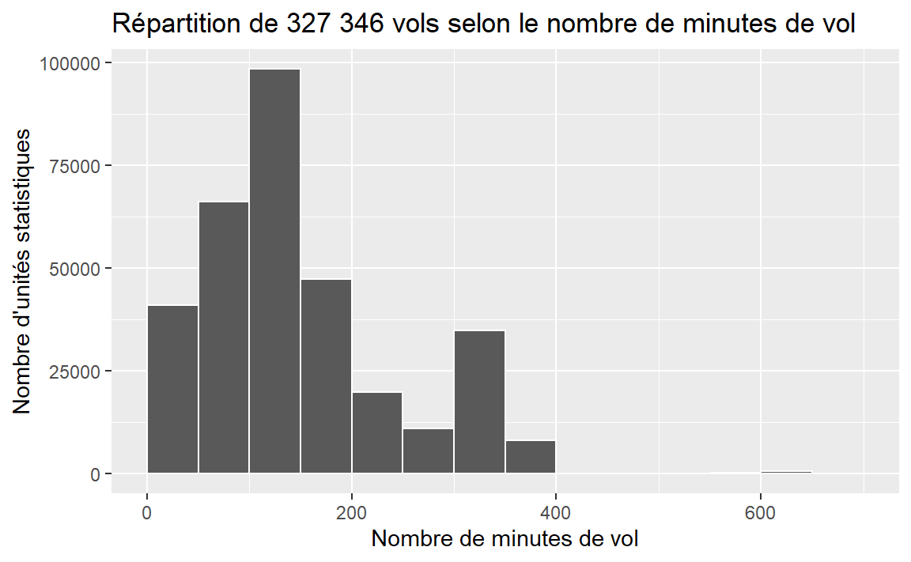

Chapitre 11 Les variables quantitatives continues
11.1 Mise en place
library(tidyverse)
library(questionr)
library(nycflights13)
library(knitr)11.2 Tableau de fréquences
Les différentes valeurs d’une variable continue étant impossibles à énumérer, nous devrons regrouper celles-ci en classes. La première colonne sera donc constituée de celles-ci.
Il sera parfois utile d’ajouter une colonne supplémentaire au tableau habituel: le milieu de classe. Celui-ci est calculé en faisant la moyenne entre le début de classe et la fin de classe.
Le tableau de fréquences que nous utiliserons est le suivant :
| Titre | |||
|---|---|---|---|
| Nom de la variable | Nombre d’unités statistiques | Pourcentage d’unités statistiques (%) | Pourcentage cumulé |
| (Classes) | (Fréquences absolues) | (Fréquences relatives) | (Fréquences relatives cumulées) |
| Total | n | 100% |
Pour être en mesure de briser une variable en classes, il faut utiliser la commande cut. Les options utilisées sont les suivantes:
Pour ce faire, nous devons utiliser la commande cut qui permet d’indiquer les frontières de ces classes. Voici un exemple où nous créons des classes de largeur 25:
temp_classes <- cut(weather$temp,
breaks = c(0, 25, 50, 75, 100, 125),
include.lowest = TRUE,
right = FALSE)
unique(temp_classes)
#> [1] [25,50) [0,25) [50,75) [75,100) [100,125] <NA>
#> Levels: [0,25) [25,50) [50,75) [75,100) [100,125]Nous nous retrouvons donc avec 6 classes. Lorsque nous présenterons les variables sous forme de tableau, il nous sera utile d’utiliser la commande cut.
L’option include.lowest indique que nous voulons conserver …
L’option right = FALSE indique que nous voulons des intervalles fermés à gauche et ouverts à droite.
include.lowest=TRUE: permet d’inclure les valeurs extrèmesright=FALSE: permet d’avoir des classes fermées à gauche et ouvertes à droitebreaks=c(0, 100, 200, 300, 400, 500, 600, 700): permet de couper les classes à 0, 100, 200, 300, 400, 500, 600 et 700
Pour simplifier le code, nous créons en premier lieu une variable air_time_rec avec les classes et nous l’affichons ensuite avec freq. Remarquons que nous avons ajouté l’option valid = TRUE car certaines valeurs sont manquantes. Rappelons que les données manquantes sont représentées par NA en R. Deux colonnes sont ajoutées:
val%: le pourcentage en omettant les valeurs manquantesval%cum: le pourcentage cumulé en omettant les valeurs manquantes
Nous obtenons donc:
air_time_rec <- cut(flights$air_time,
include.lowest=TRUE,
right=FALSE,
breaks=c(0, 100, 200, 300, 400, 500, 600, 700))
tab_airtime <- freq(air_time_rec,
cum = TRUE,
total = TRUE,
valid = TRUE)
kable(tab_airtime)| n | % | val% | %cum | val%cum | |
|---|---|---|---|---|---|
| [0,100) | 105687 | 31.4 | 32.3 | 31.4 | 32.3 |
| [100,200) | 146527 | 43.5 | 44.8 | 74.9 | 77.0 |
| [200,300) | 31036 | 9.2 | 9.5 | 84.1 | 86.5 |
| [300,400) | 43347 | 12.9 | 13.2 | 97.0 | 99.8 |
| [400,500) | 48 | 0.0 | 0.0 | 97.0 | 99.8 |
| [500,600) | 132 | 0.0 | 0.0 | 97.0 | 99.8 |
| [600,700] | 569 | 0.2 | 0.2 | 97.2 | 100.0 |
| NA | 9430 | 2.8 | NA | 100.0 | NA |
| Total | 336776 | 100.0 | 100.0 | 100.0 | 100.0 |
À la section 10.2, nous avons vu que la variable seats de la base de données planes contenait 48 valeurs différentes. Nous allons donc créer le tableau de fréquences avec des classes.
seats_rec <- cut(planes$seats,
include.lowest=TRUE,
right=FALSE,
breaks=c(0, 50, 100, 150, 200, 250, 300, 350, 400, 450))
tab_seats <- freq(seats_rec,
cum = TRUE,
total = TRUE,
valid = TRUE)
kable(tab_seats)| n | % | val% | %cum | val%cum | |
|---|---|---|---|---|---|
| [0,50) | 122 | 3.7 | 3.7 | 3.7 | 3.7 |
| [50,100) | 596 | 17.9 | 17.9 | 21.6 | 21.6 |
| [100,150) | 1193 | 35.9 | 35.9 | 57.5 | 57.5 |
| [150,200) | 860 | 25.9 | 25.9 | 83.4 | 83.4 |
| [200,250) | 269 | 8.1 | 8.1 | 91.5 | 91.5 |
| [250,300) | 68 | 2.0 | 2.0 | 93.6 | 93.6 |
| [300,350) | 131 | 3.9 | 3.9 | 97.5 | 97.5 |
| [350,400) | 70 | 2.1 | 2.1 | 99.6 | 99.6 |
| [400,450] | 13 | 0.4 | 0.4 | 100.0 | 100.0 |
| Total | 3322 | 100.0 | 100.0 | 100.0 | 100.0 |
11.3 Représentation graphique - L’histogramme
ggplot(flights, aes(x = air_time))+
geom_histogram(binwidth = 50, center = 25, color = 'white')+
labs(
title = "Répartition de 327 346 vols selon le nombre de minutes de vol",
x = "Nombre de minutes de vol",
y = "Nombre d'unités statistiques"
)
#> Warning: Removed 9430 rows containing non-finite values (stat_bin).